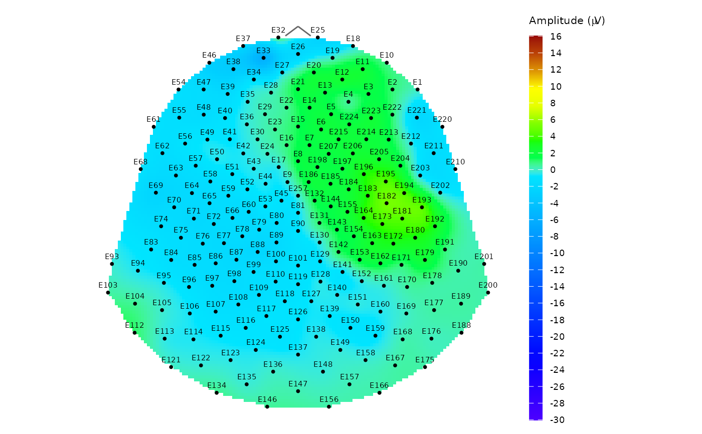

Plot topographic map of EEG signal
topo_plot.RdPlot a topographic circle or polygon map of the EEG signal amplitude using topographic colour scale. The thin-plate spline interpolation model \(\text{IM:}\; \mathbb{R}^2 \rightarrow \mathbb{R}\) is used for signal interpolation between the sensor locations. The output in the form of a ggplot object allows to easily edit the result image properties.
The function assumes that the input data have already been filtered to the desired subset (e.g., group, subject, time point).
Usage
topo_plot(
data,
amplitude,
mesh,
coords = NULL,
template = NULL,
col_range = NULL,
col_scale = NULL,
contour = FALSE,
show_legend = TRUE,
label_sensors = FALSE
)Arguments
- data
A data frame, tibble or a database table with input data to plot with at least two columns:
sensorwith sensor labels and the column with the EEG amplitude specified in the argumentamplitude.- amplitude
A character string naming the column with EEG amplitude values.
- mesh
A
"mesh"object (or a named list with the same structure) containing at leastD2element with x and y coordinates of a point mesh used for computing IM model. If not defined, the point mesh with default settings frompoint_meshfunction is used.- coords
Sensor coordinates as a tibble or data frame with named
x,yandsensorcolumns. Thesensorlabels must match the labels in sensor column indata. If not defined, the HCGSN256 template is used.- template
The kind of sensor template montage used. Currently the only available option is
"HCGSN256"denoting the 256-channel HydroCel Geodesic Sensor Net v.1.0, which is also a default setting.- col_range
A vector with minimum and maximum value of the amplitude used in the colour palette for plotting. If not defined, the range of interpolated signal is used.
- col_scale
Optionally, a colour scale to be utilised for plotting. It should be a list with
colorsandbreakscomponents (usually created viacreate_scale). If not defined, it is computed fromcol_range.- contour
Logical. Indicates, whether contours should be plotted in the graph. Default value is
FALSE.- show_legend
Logical. Indicates, whether legend should be displayed beside the graph. Default value is
TRUE.- label_sensors
A logical value indicating whether the sensor labels should also be plotted. Default value is
FALSE.
Details
For more details about required mesh structure see point_mesh function. If the input mesh structure does not match this format, an error or incorrect function behavior may occur.
Be careful when choosing the argument col_range. If the amplitude in input data contains values outside the chosen range, this will cause "holes" in the resulting plot.
To compare results for different subjects or conditions, set the same values of col_range and col_scale arguments in all cases.
The default used scale is based on topographical colours with zero value always at the border of blue and green shades.
Notes:
When specifying the coords and template at the same time, the template parameter takes precedence and the coords parameter is ignored.
This function focuses on visualization and does not perform any data subsetting. Users are expected to filter the data beforehand using standard dplyr verbs or pick_data function.
See also
point_mesh, animated version: animate_topo, average topo map: plot_topo_mean
Examples
# Plot average topographic map of signal for subject 2 from the time point 10
# (the time of the stimulus) without the outliers (epoch 14 and 15)
# a) preparing data
# a1) extract required data
edata <- pick_data(epochdata, subject_rg = 2, epoch_rg = 1:13, time_rg = 1:10)
# a2) baseline correction (needed for suitable topographic map)
data_base <- baseline_correction(edata, baseline_range = 1:10)
# a3) average computing
data_mean <- data_base |>
dplyr::filter(time == 10) |>
compute_mean(amplitude = "signal_base", type = "jack", domain = "space")
# b) plotting the topographic map with contours and legend
# interval (-30,15) is selected in consideration of the signal progress
topo_plot(data = data_mean, amplitude = "average", template = "HCGSN256",
col_range = c(-30, 15), contour = TRUE)
# c) plotting the same map without contours but with sensor labels
topo_plot(data = data_mean, amplitude = "average", template = "HCGSN256",
col_range = c(-30, 15), label_sensors = TRUE)
